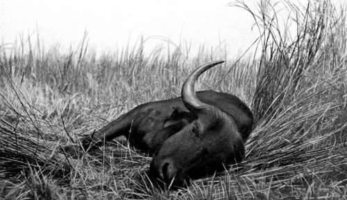

Memories Of Big Game Hunting. Part 7
Description
This section is from the book "Wild Life In Central Africa", by Denis D. Lyell. Also available from Amazon: Wild Life in Central Africa.
Memories Of Big Game Hunting. Part 7
Most buffaloes when dying bellow several times, and it is their last good-bye to life. I never hear the sound but I regret killing such splendid animals, for a buffalo is a much pluckier beast than most.
It was close on midday by this time, and, as I had hit the buffalo first before 6 a.m., it had been six hours of intense excitement and hard tracking work. A little water was left in the gourds, and there was enough to brew a cup of tea and give the men a few mouthfuls. I do not think I ever enjoyed a cup of tea more, or the pleasant smoke that followed it, as I sat and gazed at the fine beast I had had the good fortune to lay low. After that I took some photographs, which turned out very well, and, before covering him up with branches and grass, I measured his head, which was not exceptionally broad, but very deep over the frontlet, and old and gnarled. It was a fine trophy, but I had to work hard for it, which always makes it the more valued in the eyes of the hunter.
In the same month of the following year (1911) I had another exciting day with buffaloes. This time I was camped at Machinjiri, a small stream, rising in the Cholo range and flowing towards the Shire through some of the best game country left in that part of Africa. The rains had been late, and therefore much of the grass was green, and there was a lot of water in the lower parts, which made tramping through the country hard work. On that day, September 25, I was off early, as it is necessary to make the most of the cool hours of the morning. The first animal I saw was a reedbuck, and then I saw a single bull waterbuck, neither of which I wished to fire at, as I hoped to see buffalo.
We had walked some five miles, when, suddenly, as we were skirting a large dambo full of grass, reeds, and water in its lower parts, four buffaloes ran out into the open.
Buffalo Cow Shot In Nyasaland. (Showing the rank, thick reeds.)
Two appeared to have fair heads, and there was little time to pick and choose so I fired at the nearest, and then fired again, and it ran a short distance and dropped. Then I hit two others, both of which ran back into the thick reeds, and one I heard bellow soon afterwards. The fourth, which I thought seemed the best, had run along the edge of the swampy ground where the vegetation was not so rank ; I climbed an anthill and hit it twice, then went to find the two which had taken cover, and soon came on the carcase of the one I had heard bellow, which was lying in the mud and water. The other I heard near so I climbed another handy anthill and gave it a shot which seemed to drop it. I waited about a quarter of an hour and then went into the reeds, and on getting to within twenty yards the buffalo, which had been lying down, stood up, and I gave it a good shot between the neck and shoulder which killed it.
It was nasty work following buffalo in this kind of country as the odds were mostly in favour of the game, for it was quite impossible to see anything until one got to close quarters, and the soil was sticky and muddy, quite preventing quick movement.
I now went off to look for the animal that had gone along the edge of the dambo, and we soon found the footprints leading into the swamp. I took one man with me carrying a -400 cordite rifle, and carried my little 7.9mm., as I always feel safer with a rifle I know well, even although it is a small bore. We went slowly, and stopped every now and again to listen for the breathing of the wounded animal. Suddenly a black object caught my eye, and this was the buffalo's head, which was all that was visible. However, I knew he was standing almost head-on, so I fired at an imaginary mark about a foot below his nose. He got the bullet, as I heard the " phut," and he turned round and bolted. This was getting a bit too exciting, for I could not lift my feet out of the mud and water without some trouble, and every step made a noise in the rustling reeds and water. However, I decided that I must see the matter through as I had wounded a fine animal which it was my duty to try my best to finish, so I followed slowly. We had gone about a hundred yards at a slow pace, when I heard a loud grunt almost under my feet, and I saw the buffalo, which seemed very stiff, begin to rise like a cow by putting up its hindquarters first. Through weakness it could not rise quickly in the soft ground, so I took a most careful aim between neck and shoulder and fired with the small rifle, and I was both pleased and relieved to see it sink down and fall over on its side and begin the death bellow.
This buffalo was less than three paces from where I stood, which is a little too close, in my opinion ; but " all's well that ends well." If it had not been severely wounded and weak, it is likely that it would have got me, as it would have been absolutely impossible to escape it in such ground. Therefore, for such work there can be no doubt that a man requires the heaviest rifle he can handle ; and a .470 would be a much more reliable weapon than a 7.9mm., which is .311 bore. As all African sportsmen know, the buffalo is the hardest beast to stop once it has started a charge, so a weapon with great striking energy is the best tool for such work.
These buffaloes consisted of two bulls and two cows. The horns of the bulls were nothing to speak of, but one of the cows had the best head I have yet seen on a cow buffalo ; and I took her complete skin off for mounting in a museum. She had an old bullet wound in one of her front legs, and she and the others were covered profusely with ticks, especially on the softer parts of the bellies, and the soft skin inside the thighs. Buffaloes are lumbering looking beasts, but they can go at a great pace, and being very heavy they break through thick cover, just like elephants and rhinos. Their colour when young is brownish; but when they get old their hides turn a greyish black, and in thick cover they are not easy to make out.
Continue to:
- prev: Memories Of Big Game Hunting. Part 6
- Table of Contents
- next: Memories Of Big Game Hunting. Part 8